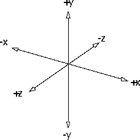

[N-World Contents] [Book Contents] [Prev] [Next] [Index]
Objects are the foundation of N·World. In this chapter, you'll learn:
N·World Object Structure
N·World creates, manipulates, and displays objects. An object is the viewable representation of a body and a transformation matrix.

Figure 6.1 Components of an object
The body of an object contains the geometric information which defines that object. Bodies consists of either a geobody or a list of objects. A geobody is a geometry entity that is self-contained and not an element of another geometry entity. Geobodies known to the 3D editor include isolated points and line segments, wires, wireframes, polyhedra, and skeletons.
Objects whose bodies are geobodies are called simple objects.
Figure 6.2 Simple object
An object whose body is a list of objects is called a compound or multiple object. A compound object can contain several levels of objects and compound objects.
Figure 6.3 Compound object
An object that forms part of a list that makes up another object is referred to as an inferior object. Objects which have inferior objects are called superior objects. Superior objects contain inferior objects. A top-level object is an object that is at the top of a hierarchy and has no superior. A terminal object sits at the bottom of the object hierarchy, and has no objects as its inferiors.
The transformation matrix contains information such as location, rotation, and scaling. Along with the body-display-item (bdi), which contains information for displaying the object on the screen, the transformation matrix determines the appearance of the object in the editor window.
Different objects can share a single body by instancing. Objects which share bodies are said to be reinstanced. Reinstanced objects each have their own unique transformation matrix that is not shared with other objects. As a result, reinstanced objects can have completely appearances, even though they share the same geometry.
Figure 6.4 Reinstanced objects
Figure 6.5 Hierarchy of a top-level, compound object
The top-level object in this hierarchy contains four inferior objects. The inferior object on the left is a simple object and contains only a body and a bdi. Two reinstanced objects which share the same body occupy the center of the hierarchy. The object on the right is itself a compound object composed of two inferior, simple objects.
Coordinate Systems
The world in N-Geometry is a Cartesian coordinate space. Such a space is defined in terms of a starting point, known as the global origin, and a set of three mutually perpendicular directions, known as the major axes.
Any point in space can be uniquely defined by three numbers, the x, y, and z coordinates, which represent its distance from the three planes perpendicular to the major axes passing through the global origin. The three directions, together with the global origin, are called the global coordinate system, as shown in Figure 6.6.
In N-Geometry this coordinate system is "right-handed;" positive y represents "up," positive x is "right," and positive z is "forward."

Figure 6.6 The global coordinate system
Objects are defined in terms of their own local coordinate system. Typically, when an object is created, the origin of its local coordinate system is located at the center of the object. The local coordinate system is, in turn, defined by its relationship with the global coordinate system. When an object is first instanced its local origin is the same as the global origin. Coordinate systems which share origins, and whose axes are parallel, are said to be coincident.
Modifying and Transforming Objects
You can use the 3D editor or extensions you program in Lisp to change objects by manipulating its body or its transformation matrix:
Modifications to the body change the data in each primitive element of the body, while changes to the transformation matrix affect only the appearance of the object.
Changing Transformation Matrices
The transformation matrix itself is an array of sixteen numbers that is used to define the drawn position of an object with respect to some coordinate space. A transformation matrix which is coincident with the global coordinate system is called an identity matrix. Objects with identity matrices are said to be in their home position.
When you modify an objects transformation matrix, you are effectively modifying the coordinate system in which the object is embedded. Transforming does not affect the body of the object, only its appearance in the world. For example, a polyhedron might have all its vertices centered around the origin. Applying a translation transformation to the polyhedron's object displaces the space in which the polyhedron is defined. The polyhedron's vertices are still centered around the local origin, but the object now appears displaced from the global origin because the local space has moved relative to the global coordinate system. When the object is in its home position it is impossible to visually distinguish a transformation from an equivalent body modification. Transformations can be undone by reinitializing the objects transformation matrix. Reinitializing returns the object to its identity matrix and its home position.
[N-World Contents] [Book Contents] [Prev] [Next] [Index]
 Another fine product from Nichimen documentation!
Another fine product from Nichimen documentation!
Copyright © 1996, Nichimen Graphics Corporation. All rights
reserved.